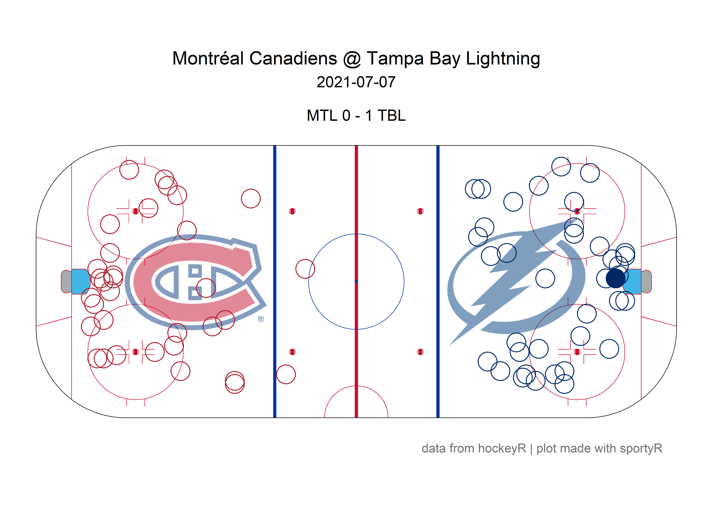
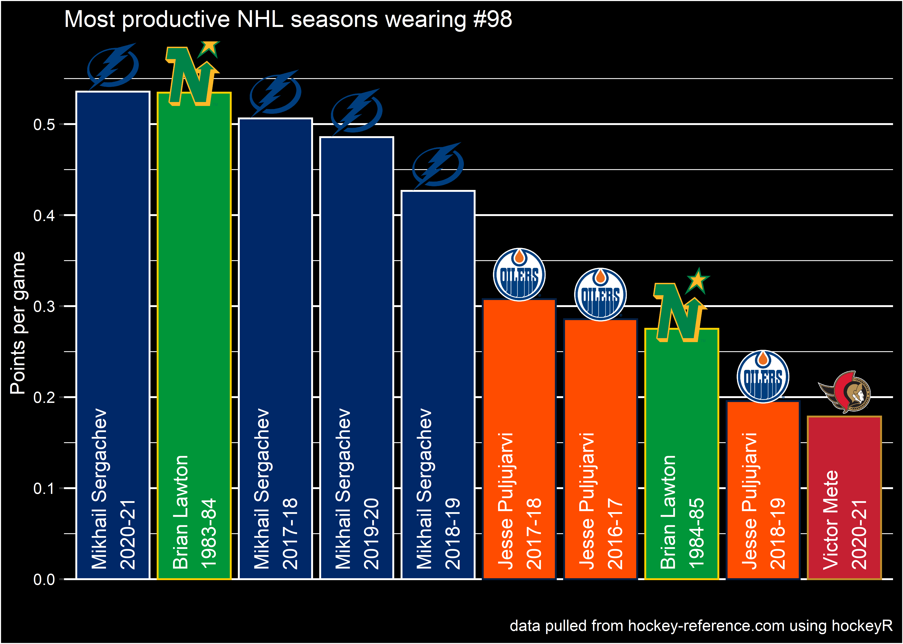
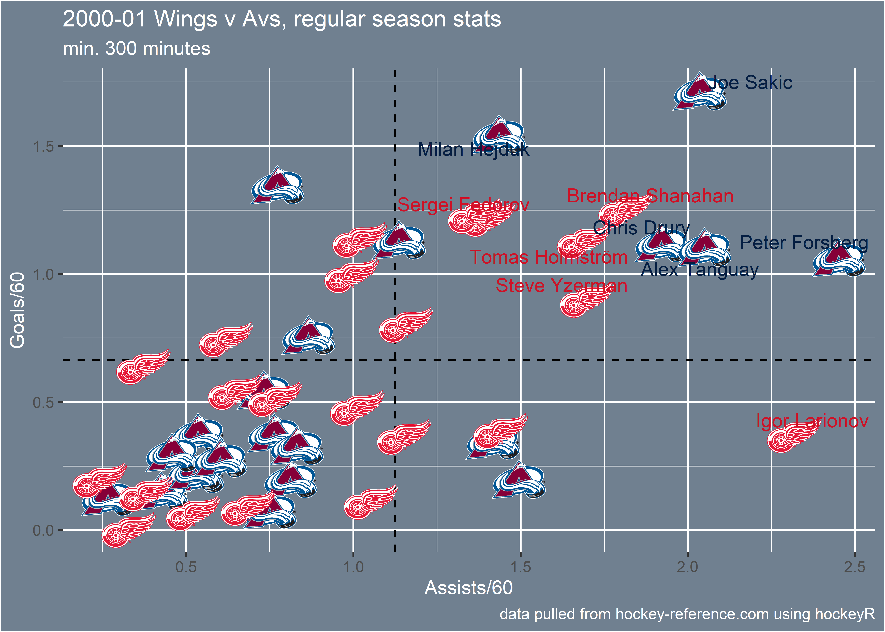

This package contains various functions to scrape and clean play-by-play data from NHL.com. Season play-by-play data scraped with these functions can be found in the hockeyR-data repository. It also contains functions to scrape data from hockey-reference.com, including standings, player stats, and jersey number history.
Before installing, confirm that your version of R is updated to at least 4.1.0. This will ensure R can handle R’s native pipe operator |>, which was unavailable until 4.1.0. If you don’t know which version of R is installed, try verson$version.string in your R console.
version$version.string
#> [1] "R version 4.1.0 (2021-05-18)"You can install the development version of hockeyR from GitHub with:
# install.packages("devtools")
devtools::install_github("danmorse314/hockeyR")Load the package (and any others you might need—for plotting an ice surface I highly recommend the sportyR package).
library(hockeyR)
library(tidyverse)
#> Warning: package 'ggplot2' was built under R version 4.1.1
library(sportyR)The fastest way to load a season’s play-by-play data is through the load_pbp() function, which pulls the desired season(s) from hockeyR-data. load_pbp() also has the advantage of accepting more explicit values for the seasons desired. For example, if you want to get the play-by-play for the 2020-2021 NHL season, all of load_pbp('2020-2021'), load_pbp('2020-21'), and load_pbp(2021) will get it for you.
pbp <- load_pbp('2020-21')
#> Fetching 2020_21 season play-by-play...
#> Done!
#> Loaded 868 regular season games & 84 postseason games for 2020_21The available data goes back to the 2010-2011 season as of now, as the NHL JSON source used for this scraper doesn’t include detailed play-by-play prior to that.
All variables available in the raw play-by-play data are included, along with a few extras added on including: - shot_distance - shot_angle - x_fixed - y_fixed The shot_distance and shot_angle are measured in feet and degrees, respectively. The variables x_fixed and y_fixed are transformations of the x and y event coordinates such that the home team is always shooting to the right and the away team is always shooting to the left. For full details on the included variables, see the scrape_game() documentation.
As mentioned above, an easy way to create a shot plot is through the sportyR package. You can also use the included team_colors_logos data to add color and team logos to your plots.
# get single game
game <- pbp |>
filter(game_date == "2021-07-07" & home_abbreviation == "TBL")
# grab team logos & colors
team_logos <- hockeyR::team_logos_colors |>
filter(team_abbr == unique(game$home_abbreviation) | team_abbr == unique(game$away_abbreviation)) |>
# add in dummy variables to put logos on the ice
mutate(x = ifelse(full_team_name == unique(game$home_name), 50, -50),
y = 0)
# add transparency to logo
transparent <- function(img) {
magick::image_fx(img, expression = "0.5*a", channel = "alpha")
}
# get only shot events
fenwick_events <- c("MISSED_SHOT","SHOT","GOAL")
shots <- game |> filter(event_type %in% fenwick_events) |>
# adding team colors
left_join(team_logos, by = c("event_team_abbr" = "team_abbr"))
# create shot plot
geom_hockey("nhl") +
ggimage::geom_image(
data = team_logos,
aes(x = x, y = y, image = team_logo_espn),
image_fun = transparent, size = 0.22, asp = 2.35
) +
geom_point(
data = shots,
aes(x_fixed, y_fixed),
size = 6,
color = shots$team_color1,
shape = ifelse(shots$event_type == "GOAL", 19, 1)
) +
labs(
title = glue::glue("{unique(game$away_name)} @ {unique(game$home_name)}"),
subtitle = glue::glue(
"{unique(game$game_date)}\n
{unique(shots$away_abbreviation)} {unique(shots$away_final)} - {unique(shots$home_final)} {unique(shots$home_abbreviation)}"
),
caption = "data from hockeyR | plot made with sportyR"
) +
theme(
plot.title = element_text(hjust = 0.5),
plot.subtitle = element_text(hjust = 0.5),
plot.caption = element_text(hjust = .9)
)
Getting clean data for games going back to the start of the NHL RTSS era (2007-2008 season) is in the works. There are also plans to create a basic expected goals model and perhaps a win probability model that would include xG values for each shot and win probabilities for each play, similar to the expected points model found in the nflfastR package. And of course, scraping the upcoming NHL season and updating the data daily is planned for the 2021-2022 season.
There are a few functions also included that will scrape data from hockey-reference.com.
Grab every team’s win-loss record in any season going back to 1918 with the get_team_records() function
get_team_records(1967) |>
arrange(desc(w)) |>
select(team_name, team_abbr, season, overall, w, l, otl, st_points)
#> # A tibble: 6 x 8
#> team_name team_abbr season overall w l otl st_points
#> <chr> <chr> <chr> <chr> <int> <int> <int> <dbl>
#> 1 Chicago Black Hawks CBH 1966-67 41-17-12 41 17 12 94
#> 2 Montreal Canadiens MTL 1966-67 32-25-13 32 25 13 77
#> 3 Toronto Maple Leafs TOR 1966-67 32-27-11 32 27 11 75
#> 4 New York Rangers NYR 1966-67 30-28-12 30 28 12 72
#> 5 Detroit Red Wings DET 1966-67 27-39-4 27 39 4 58
#> 6 Boston Bruins BOS 1966-67 17-43-10 17 43 10 44You can also get stats down to the player-level with get_player_stats_hr(). This function defaults to the player’s career statistics, but you can enter a specific season or range of seasons as well. Note that the season references the year the specific season ended (ie the 2021-22 season should be entered as 2022)
get_player_stats_hr(player_name = "Wayne Gretzky", season = 1982) |>
select(player, age, season_full, tm, gp, g, a, pts)
#> # A tibble: 1 x 8
#> player age season_full tm gp g a pts
#> <chr> <int> <chr> <chr> <int> <int> <int> <int>
#> 1 Wayne Gretzky 21 1981-82 EDM 80 92 120 212Ever wonder who the most prolific goal-scorer was to wear a specific number? Use get_jersey_players() in conjunction with get_player_stats_hr() to find out:
# get every player to wear the desired number
df <- get_jersey_players(98)
# get their statistics from the year they wore that sweater
df2 <- purrr::map2_dfr(
.x = df$player,
.y = df$season,
~get_player_stats_hr(player_name = .x, season = .y)
)
# who had the most goals?
arrange(df2, desc(g)) |>
select(player, tm, season_full, gp, g, a, pts)
#> # A tibble: 11 x 7
#> player tm season_full gp g a pts
#> <chr> <chr> <chr> <int> <int> <int> <int>
#> 1 Jesse Puljujarvi EDM 2017-18 65 12 8 20
#> 2 Brian Lawton MNS 1983-84 58 10 21 31
#> 3 Mikhail Sergachev TBL 2019-20 70 10 24 34
#> 4 Mikhail Sergachev TBL 2017-18 79 9 31 40
#> 5 Mikhail Sergachev TBL 2018-19 75 6 26 32
#> 6 Brian Lawton MNS 1984-85 40 5 6 11
#> 7 Jesse Puljujarvi EDM 2018-19 46 4 5 9
#> 8 Mikhail Sergachev TBL 2020-21 56 4 26 30
#> 9 Victor Mete OTT 2020-21 14 1 1 2
#> 10 Jesse Puljujarvi EDM 2016-17 28 1 7 8
#> 11 Victor Mete MTL 2020-21 14 0 3 3You can use the data to make plots with actual team colors and logos as well using the team_logos_colors file included with the package.
# add colors & logos
df3 <- df2 |>
group_by(player, season_full) |>
# this part is just to get both of Mete's teams into one row
summarize(
gp = sum(gp),
pts = sum(pts),
pts_gm = pts/gp,
tm = tail(tm, n=1),
.groups = "drop"
) |>
mutate(player_season = glue::glue("{player}\n{season_full}")) |>
left_join(team_logos_colors, by = c("tm" = "team_abbr"))
# make a bar chart
df3 |>
ggplot(aes(reorder(player_season, -pts_gm), pts_gm)) +
geom_col(fill = df3$team_color1, color = df3$team_color2) +
ggimage::geom_image(
aes(y = pts_gm + .027, image = team_logo_espn),
size = .07, asp = 1.5
) +
geom_text(aes(y = 0.01, label = player_season),
color = "white", angle = 90, hjust = 0) +
scale_y_continuous(breaks = scales::pretty_breaks()) +
theme(
panel.background = element_rect(fill = "black"),
plot.background = element_rect(fill = "black"),
panel.grid.major.x = element_blank(),
axis.text.x = element_blank(),
axis.ticks.x = element_blank(),
axis.text.y = element_text(color = "white"),
title = element_text(color = "white")
) +
labs(x = NULL, y = "Points per game",
title = "Most productive NHL seasons wearing #98",
caption = "data pulled from hockey-reference.com using hockeyR") The most reliable way to grab player stats is through the get_rosters() function. The get_player_stats_hr() function still has some kinks to be worked out, as it works based on the player name (and messes up if you want to differentiate the Sebastian Ahos).
With get_rosters(), you can look up the current roster for any team in the league or the roster at season’s end for any prior season. By default, it will only pull basic player info (name, age, height & weight, etc), but you can grab all the basic counting stats by setting include_stats to TRUE.
player_stats <- get_rosters(c("COL","Detroit red wings"), season = 2001, include_stats = TRUE) |>
mutate(
g_60 = 60 * g / toi,
a_60 = 60 * a /toi,
p_60 = 60 * pts / toi
) |>
filter(toi >= 300) |>
left_join(team_logos_colors, by = "team_abbr")
top_performers <- filter(
player_stats,
p_60 >= arrange(player_stats, -p_60) |> slice(10) |> pull(p_60)
)
player_stats |>
ggplot(aes(a_60,g_60)) +
geom_hline(yintercept = 60 * sum(player_stats$g) / sum(player_stats$toi),
linetype = "dashed", color = "black") +
geom_vline(xintercept = 60 * sum(player_stats$a) / sum(player_stats$toi),
linetype = "dashed", color = "black") +
#geom_point(aes(size = toi), show.legend = FALSE,
# color = player_stats$team_color_alt1, alpha = .8) +
ggimage::geom_image(aes(image = team_logo_espn),
size = 0.07, asp = 1.5) +
ggrepel::geom_text_repel(
data = top_performers,
aes(label = player),
color = top_performers$team_color_alt1
) +
scale_y_continuous(breaks = scales::pretty_breaks()) +
scale_x_continuous(breaks = scales::pretty_breaks()) +
theme(
panel.background = element_rect(fill = "#708090"),
plot.background = element_rect(fill = "#708090"),
title = element_text(color = "white")
) +
labs(x = "Assists/60", y = "Goals/60",
title = "2000-01 Wings v Avs, regular season stats",
subtitle = "min. 300 minutes",
caption = "data pulled from hockey-reference.com using hockeyR")